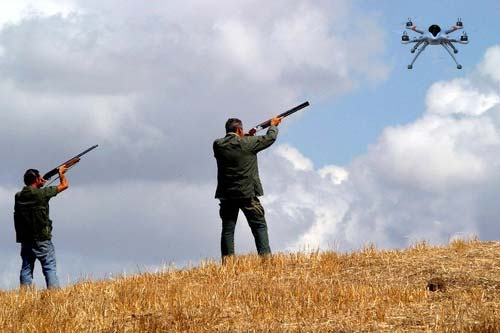

Radio & antennas
DRONE JAMMER
anti-UAV system - APR
Page index
Premise
December 2016-January 2021
They're starting to appear around, they are flying Drones for civilian use, they generally use 4 propellers driven by as many electric motors, ranging from small toys to sophisticated Drones for video shooting capable of carrying 25Kg of equipment.
To regulate this potential aerial traffic of UAS (Unmanned Aircraft Systems), several flight rules and regulations have been issued, both for aircraft characteristics and for those who must pilot them.
See ENAC website Remote Piloted Aircraft Systems
Clearly the technology used in the construction of toy drones is much simplified but is inspired by military UAVs already in use on battlefields or for surveillance. Drones of considerable size, but technology has developed military drones with reduced dimensions similar to the high end of toy drones, or better to say for hobbyists...!
The desire of many children is to receive a Drone as a gift but also the desire of many parents who remained children....
Almost all drones carry a video camera on board and the desire to poke around is strong and they invade the neighbors' privacy.......It is forbidden to fly over and film private subjects, therefore as a good radio amateur I can give some advice on how it would be possible to defend oneself from the invasion of drones........
Toy drone in flight.

Flying a 4-rotor Drone is much easier than it used to be, I remember people doing model aircraft years ago and spending months building a helicopter only to see it crash at almost every flight test. Now Drones are self-leveling thanks to accelerometers, they proceed on a stable course (GPS), they can also hover in flight compensating for headwind and they protect themselves from battery discharge, descending or returning to the starting point before the battery is completely drained. (We're talking about Drones in the 300-1000€ range)
Description of electronic characteristics commercial drones....
The following tables help us understand the dimensions and performance of the various drones on the market, toys, serious toys and semi-professional and professional drones....
Size/weight
Radio remote control
GPS
FPV
Range
Runtime
Insurance
A
{kind=link}
<200g
2.4 GHz
WiFI
NO
No
YES WiFi
30mt
5-15min
not mandatory
B
{kind=link}
<249g
2.4 GHz
5.8 GHz
Yes
5.8 GHz
300mt
10-20min
Yes
C
{kind=link}
>250g
2.4 GHz
5.8 GHz
Yes
5.8 GHz
3000mt
20-40min
Yes
+ ENAC license
From the table you can see the summary technical characteristics of each Drone category; there are also 3-rotor Drones as well as 6-rotor Drones; fixed-wing Drones are also arriving, so with wings and just 1 or 2 motors, characterized by long runtime, since a single motor and the lift of the wings lengthen runtime considerably; models with over 1 meter wingspan can fly for several hours also thanks to photovoltaic panels (very light) placed on the wings; it is still a professional category dedicated to territory monitoring.
It Group A are toy Drones costing less than 100€, with a flight range of some tens of meters, They fall down easily on their own and the batteries are poorly performing, for many they represent the first purchase and are often abandoned for a more serious purchase. They do not require permits and can fly in houses and gardens and open places. Always be careful as they can fall on private property and worse on people and vehicles. Better to use them in open places far from infrastructure, from the moment you leave your house it is always advisable to have a minimum of insurance.
It Group B they are toys costing even 600€, they represent the second step in Drone purchases, they can carry on board a small camera or video camera even in 4K format, larger batteries allow decent runtime and the flight range starts to become several tens of meters horizontal and vertical. In terms of weight, size and flight speed they represent a greater hazard than category A and insurance is mandatory, an ENAC license is not required
It Group C they are no longer toys but unmanned aircraft for hobbyist or professional use; costs range from 500€ up; you must obtain an ENAC flight license and take out expensive mandatory insurance. They can carry GoPro cameras or larger ones; flight endurance can exceed 30 minutes. With powerful radio controls, GPS flight and upgraded batteries they can cover flight distances of several km.
Countermeasures

Drone hunter
Just for fun!
the first system to take down a drone that comes to mind, is the use of a hunting rifle, I would say with small pellets, important is to hit the battery or the propellers.
It also depends on the distance, but less effective is the use of a rifle or even less of an air gun.
At short range a PaintBall rifle could be effective, on the other hand pistols and yellow pellet rifles are completely ineffective.
Nylon wires hanging
An effective countermeasure of a mechanical nature to block and bring down a 4-rotor drone, can be that of hooking a thin fishing nylon line, under another drone perhaps toy type smaller but more manageable and faster. Approaching the "invading" drone it is very likely that the line will end up in the propellers blocking them, with the inevitable fall. Whoever operates the invading drone is farther away and cannot see the thin line. The trick is to fix the line with a small elastic that at the slightest pull breaks allowing the defense drone to escape....
Even just hanging Nylon wires from power cables or tall trees can already be a deterrent to stop invasive drones on private property. Ending up in the wires makes a crash inevitable...
Kamikaze drone
Another effective countermeasure is to use a kamikaze drone, perhaps mounting a metal rod or fiberglass sticks on it, then send the drone on a suicide mission against the invader hoping to hit the batteries with the pointed metal rod, or try to break the propellers.
In any case it is necessary to have more than one drone ready for defense, as others could arrive.
Fishing nets
In one of the films mentioned below you can see how special drones equipped with a net of nylon always hanging or equipped with special launchers are used; the drone trapped in the net has no chance of escape, is captured by the police and the owner is easily identified, at least that is what happens abroad...
Battelle Drone Defender (remote radio control)

One of the electronic countermeasures is to take control of the Drone via a more powerful radio remote control than the original, and usually closer to the drone than the original one. It is not easy to do as they all work on frequencies from 2400 to 2500 MHz but they change the internal instructions and digital transmission encodings. Drone Defender also with the second antenna inhibits GPS signals sending the Drone into Recovery. From one of the videos mentioned below you can clearly see a device that intercepts and brings a drone down. It is not known if it is simulated or actually effective. In practice the device should have in memory the protocols of all drones on the market and the ability to make frequent updates. I don't see it as such an effective product, you risk spending quite a bit and not being able to stop a 100 euro drone....
Jammer 2400-5800 MHz (radio remote control)
An effective electronic counter-measure against drones is to jam the remote control with a specific jammer. The frequency of remote controls ranges from about 2400 to 5800 MHz. Transmission is digital and bidirectional much like WiFi.
From tests it has been seen that radio controls in band A do not exceed 3-50mW, while band B reaches 100mW, and band C goes from 100mW and up.
The Jammer circuit must sweep over the entire range of frequencies in use, and the sweep time must be 1000 Hz or higher, which means the entire range from 2400 to 2500 MHz is covered, 1000 times per second. Lower sweep frequencies are not very effective.
Using powers similar to the radio transmitter poor results are obtained, first you need a good directional antenna like Yagi or parabolic reflector all to be aimed at the drone in flight.
For reliable results you need at least +30 dB of signal on the antenna, therefore 1 W or better 5 W on the antenna gives us an effective signal that should block transmission beyond 100 m.
This system can work well on Class A Drones and some Class B ones, however many also use GPS navigation and in case of missing radio control signal they go into recovery (go home) bringing the drone to ground from where it took off.
Jammer 1227-1575 MHz (GPS)
To block B and C category Drones equipped with GPS navigation, it is necessary to adopt multi-frequency Jammer systems. So 2400-2500 MHz jammer and then a second Jammer with dedicated antenna to inhibit the GPS signal that works on two frequencies L1 (1575.42 MHz) and L2 (1227.60 MHz). Therefore we need a second sweep generator that covers these frequencies and once amplified to at least 1W applied to a second directional antenna which, being at a lower frequency, will have a larger size than the 2400 MHz one.
Since GPS frequencies are two fixed frequencies, it's conceivable that the jammer only moves on the two values without transmitting on the intermediate frequencies. Always important to have a good directional antenna.
Jammer 5.8 GHz (FPV)
To prevent all flight possibilities of a drone it is also necessary to block the transmission frequency of the onboard video camera, which allows the pilot to see in real time where it is flying. Currently pretty much all FPV systems are using the 5.8 GHz frequency. Making a sweep of ±200 MHz around the center value of 5.8 GHz should cover all band variants.

Effective three-band DroneShield system, for military use. (Covers all the radio bands mentioned above.)
However, to inhibit FPV transmission we should operate differently. In this case the transmission happens from the drone (in flight) towards the operator on the ground, so the drone is in a privileged position to transmit to ground and to disturb the reception we should point the antenna not towards the drone, but towards the receiver, not knowing where it is you must position the transmitting antenna as high as possible and use an omnidirectional dual-polarization antenna type. Not having the advantage of directional antennas the only option is to increase the power, you need to reach at least 10W recovering another 10dB, which are not so easy to achieve at these frequencies. The alternative is to send a small drone into flight with an onboard FPV jammer.
Precisely to avoid Jammer systems, many new generation drones are mounting on board, in addition to the usual devices, also AntiJammer systems and the use of electronic compass, barometric sensor (altimeter) and ultrasonic sensors, all immune to interference, allowing them to continue flying although with less precision and descend slowly thanks to ultrasonic or infrared sensors that detect obstacles both vertically and horizontally, all in the presence of strong Jammer interference.
Articles on the web
https://www.aerial-shop.com/it/accueil/1012-sistema-di-neutralizzante-anti-drone.html
http://www.qrz.ru/schemes/contribute/security/jammers/drone-jammer.pdf
http://www.dday.it/redazione/18781/tutti-i-modi-anche-i-piu-bizzarri-per-difendersi-dai-droni
http://leganerd.com/2016/05/18/dronedefender-il-fucile-anti-drone/
http://www.wired.it/gadget/accessori/2016/12/29/pistola-anti-drone/
Videos related to anti-drone systems
https://youtu.be/zX4XXLb_Vuw (Batelle Drone Defender)
© Roberto Chirio: all rights reserved.